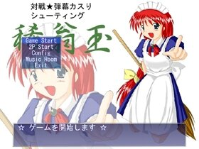
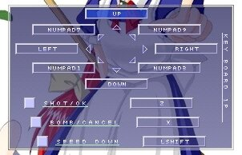

| [ top ] [ back ] [ next ] |
||||||||||||||||||||||||||||||
| ６．タイトル画面 |
||||||||||||||||||||||||||||||
|
・ゲーム起動後、タイトル画面が表示され、次の各モードを選択する事が出来ます。  ・Game Start １プレイヤー vs ＣＯＭで対戦を開始します。 ・２Ｐ Start １プレイヤー vs ２プレイヤーで対戦を開始します。 ・Config ゲームの設定を行います。 ・Music Room 音楽室に入ります。 ・Exit ゲームを終了し、ウインドウズに戻ります。 ・項目決定は、１Ｐモードでショットに設定されているキー、または エンターキー、もしくはマウスの左クリックで行います。 ・項目を戻る場合は、１Ｐモードでボムに設定されているキー、または ＥＳＣキー、もしくはマウスの右クリックで行います。 ・初期設定では１Ｐモードでショットに設定されているキーは「Ｚキー」、 ボムに設定されているキーは「Ｘキー」です。 |
||||||||||||||||||||||||||||||
| ７．「Game Start」について |
||||||||||||||||||||||||||||||
|
・タイトル画面Game Startを選択すると以下のような項目を選択する事が出来ます。 【 Story Mode 】 ストーリーモードでゲームを開始します。 【 VS CPU 】 ＣＰＵとの対戦を開始します。 【 BossAttack Mode 】 ボスアタックモードでゲームを開始します。 |
||||||||||||||||||||||||||||||
| ８．「2P Start」について |
||||||||||||||||||||||||||||||
|
・タイトル画面2P Startを選択すると以下のような項目を選択する事が出来ます。 １．【キーボードＶＳキーボード】 「キーボード と キーボード」、もしくは 「パッド と パッド」で対戦を行います。 ※「パッド対パッドの対戦」での対戦も可能です。
２．【パッドＶＳキーボード】 「パッド と キーボード」で対戦を行います。 キーボードには、１Ｐ用の設定が使用できます。
３．【キーボードＶＳパッド】 「キーボード と パッド」で対戦を行います。 ２と割り当てが逆になります。
４．【ＴＣＰ／ＩＰ接続】 TCP/IP接続(DirectPlay)による対戦を行います。 ◆TCP/IP 対応について◆ ・今回は、キーボードのデータを送るのみの プログラム 「KOG_Key.exe」 を別マシンで起動して、 そちらからキーボードのデータを送る、という形式をとっています。 ・今回のバージョンでは正常に動作しない恐れがあります。ご了承ください。 ・尚、１回以上接続を行った場合、稀翁玉の終了に時間がかかることがあります。 ・プログラム「KOG_Key.exe」は「対戦パッチ」フォルダに同封されています。 ・現在の段階ではキーボードの入力のみをデータとして送る といった形になっているため、同一のディスプレイを 見ることができないと、事実上の対戦はできません。
|
||||||||||||||||||||||||||||||
| ９．音楽室について |
||||||||||||||||||||||||||||||
|
・タイトル画面でＭｕｓｉｃ Ｒｏｏｍを選択すると、音楽室に入れます。 ・ゲーム中で使用されている音楽を聞く事が出来ます。
１Ｐ用キーボードでボムに設定されているキーでも、タイトルに戻る事が可能です。 ※表示されている鍵盤は、後述のＣｏｎｆｉｇのサウンド設定で、ＢＧＭがＭＩＤＩになっている場合のみ動作します。 再生音源にＷＡＶＥを選んでいるときは動作しません。 |
||||||||||||||||||||||||||||||
| １０．Ｃｏｎｆｉｇについて |
||||||||||||||||||||||||||||||
|
・タイトル画面でＣｏｎｆｉｇを選択すると、以下の項目が表示されます。 【難易度】 ゲームの難易度を変更します。 【グラフィック】
※描画間隔が「ウェイト無し」の場合、ビデオカードのリフレッシュレートに応じてゲームの進行が行われます。 【サウンド】
【 入力 】
 右の画像のように変更したい個所をマウスで選択した後、そのキーを押して下さい。 なお、右の画像の場合では[ UP ]をマウスで選択した状態となっています。 右クリックもしくはＥＳＣキーで抜けます。 |
||||||||||||||||||||||||||||||
[ top ] [ back ] [ next ] |
||||||||||||||||||||||||||||||